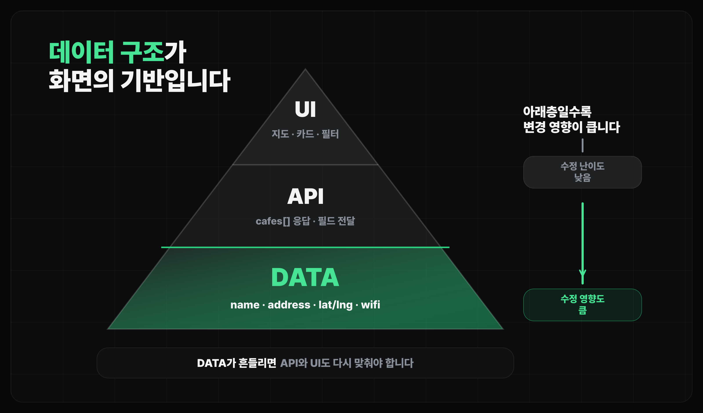
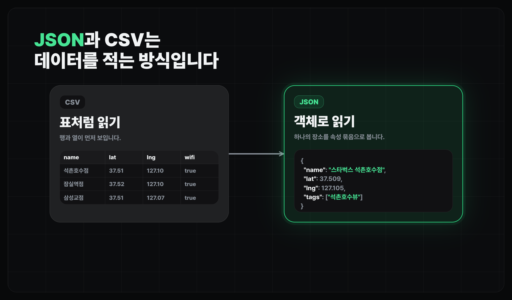
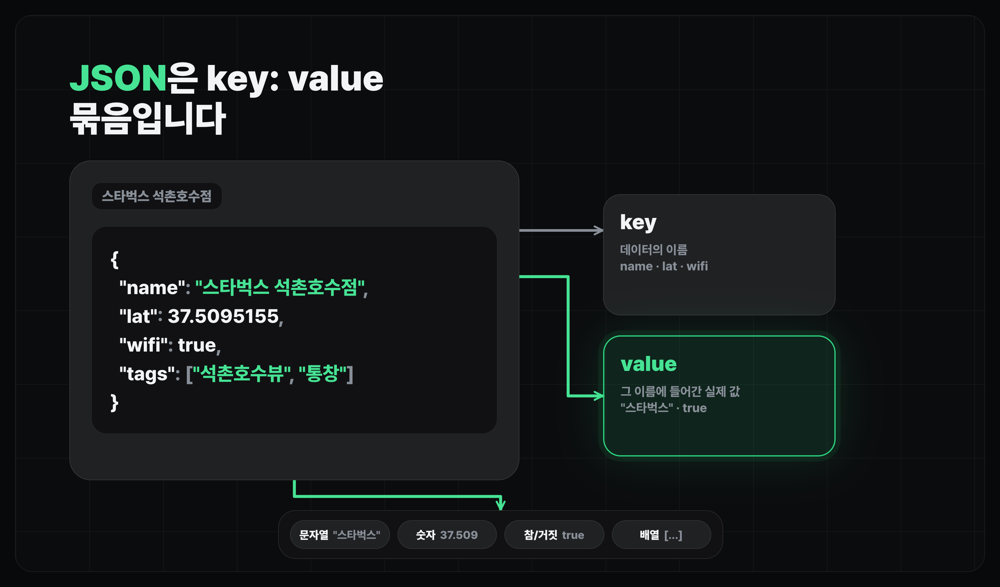

프로젝트 시작하기
데이터 읽기 (JSON)
느좋카페 데이터를 JSON으로 읽고 지도와 카드에 필요한 필드를 구분합니다.
얻어갈 것
- JSON 구조를 이해하고 느좋카페에서 사용할 데이터를 직접 확인합니다.
왜 데이터와 지도부터 보나
- 느좋카페은 일반 웹페이지가 아니라 장소 데이터를 지도 위에 보여주는 서비스입니다.
- 이번 레슨에서는 "우리가 지도에 올릴 데이터가 어떤 모양인지"를 먼저 확인합니다.
데이터 구조를 먼저 보는 이유 (중요)
- 데이터 구조는 API 응답과 화면 구성을 구성하는 기준입니다.
- 서비스 개발은 보통 데이터베이스에서 시작해 API 서버를 거쳐 프론트엔드 화면으로 흘러갑니다.
- 데이터 구조가 흔들리면 API 응답 모양과 화면 구성도 같이 흔들려서, 뒤로 갈수록 바꾸기 어려워집니다.
- 그래서 처음에는 기능을 바로 만들기보다, 서비스에 어떤 데이터가 필요한지 먼저 논의하면 뒤에서 덜 흔들립니다.

JSON과 CSV

- CSV는 표처럼 행과 열로 보는 데이터에 가깝습니다.
- JSON은 객체와 배열로 구조를 표현하기 좋아서, 웹앱에서 자주 씁니다.
- 이번 실습 파일은 여러 카페 객체가 배열 안에 들어 있는 JSON 형식으로 봅니다.
JSON 기본

- JSON은 기본적으로
"key": value구조입니다. 왼쪽 key는 데이터 이름이고, 오른쪽 value는 실제 값입니다. - 예를 들어
"name": "스타벅스 석촌호수점"은name이라는 이름으로"스타벅스 석촌호수점"이라는 값을 저장한 것입니다. - 객체(object)는
{ ... }로 감싸고, 여러 key/value를 묶어 한 장소의 정보를 표현합니다. - 배열(array)은
[ ... ]로 감싸고, 여러 장소 객체를 순서대로 담아 둔 목록입니다. - 값의 타입은 문자열(
"스타벅스 석촌호수점"), 숫자(37.5095155), 참/거짓(true), 배열(["석촌호수뷰", "통창"])처럼 나뉩니다.
느좋카페 데이터 읽기
- 오른쪽 workbench에서
cafes.json을 열어 첫 몇 줄만 확인합니다. - 배열 안의 객체 하나가 하나의 카페이고, 카페마다 이름, 주소, 좌표, 작업 적합도 정보가 들어 있습니다.
- 지금은 지도에 꼭 필요한 값과 나중에 보여줄 값을 나눠봅니다.
기본 필드 읽기
{
// 화면에서 사용자가 바로 읽는 장소 이름과 주소입니다.
"name": "스타벅스 석촌호수점",
"address": "서울 송파구 석촌호수로 262 (송파동)",
// 지도 위에 마커를 찍기 위한 위도와 경도입니다.
"lat": 37.5095155,
"lng": 127.1052962,
// 장소 상세를 외부 지도 서비스로 연결할 때 쓸 수 있는 링크입니다.
"naver_place_url": "https://map.naver.com/p/entry/place/33979877",
// 영업시간과 24시간 운영 여부입니다.
"open_time": "08:00",
"close_time": "22:00",
"is_24h": false,
// 가격 감각을 보여주기 위한 대표 메뉴 가격입니다.
"iced_americano_price": 4700,
// 작업 환경을 판단하기 위한 핵심 기준입니다.
"outlet": "some",
"wifi": true,
"noise": "quiet",
"work_fit": "ok",
// 카드 뱃지나 필터로 보여주기 좋은 짧은 설명 목록입니다.
"tags": ["석촌호수뷰", "넓은매장", "3층", "통창", "콘센트자리한정"],
}
- 지도에 바로 필요한 값:
name,address,lat,lng - 운영/비용 판단:
open_time,close_time,is_24h,iced_americano_price - 작업 적합도 판단:
outlet,wifi,noise,work_fit - 화면 보조 정보:
tags,naver_place_url
마무리
- 지도 서비스는 화면을 만들기 전에 데이터가 어떤 모양인지 알아야 합니다.
- 다음 레슨에서는 이 데이터를 올릴 지도 캔버스, 즉 카카오맵 SDK 설정을 준비합니다.